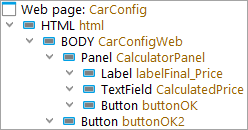
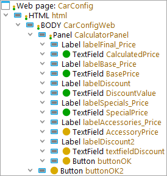
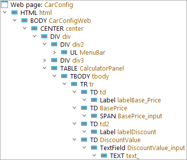

| Version 6.0.3 |
The most important feature of a GUI test tool is the recognition of the graphical components. QF-Test offers a lot of configuration options for this. This section presents an overview over the most common strategies and settings to make component recognition as stable as possible.
Note You should define a component recognition strategy for your project before starting to implement tests in QF-Test. Otherwise, test maintenance can create larger expenses.
The recognition of components in the SUT during test playback is very complex. The challenge lies in the changes the interface of the SUT can go through all the time even during normal use. Windows are opened and closed or varied in size, changing the position and size of components within. Menus and combo boxes are opened and closed, components are added or removed, made visible or inisible, activated or disabled. In addition, the application under test itself will develop over time, which will reflect in changes to its interface. All these changes must be handled flexibly by QF-Test to be able to match components as reliably as possible.
In many cases, QF-Test can manage this with the default settings. QF-Test uses an intelligent, probability-based algorithm to achieve a stable and fault tolerant component recognition. It assesses the attributes described in The following criteria are availabe for component recognition: and weights them. However, if no good recognition attributes are available, even the best algorithm will struggle. For this case, there are possiblilites for configuration and optimization which are described in Opportunities for optimization.
The first question is whether the default settings are already sufficient, so:
This section is intended to enable you to assess whether the current component recognition will, in all likelihood, be robust.
The following are important elements of robust component recognition:
In most cases, the class and the name are the most robust criteria for recognition. (In rare cases, however, they change from one version of the application to the next. We consider this messy case in Opportunities for optimization, item 2.) Usually the label of the component also rarely changes and is thus also well suited. Detailed information on all the detection features can be found in Recognition criteria.
With the class, QF-Test tries to derive which functionality a component has from the class used by the developer. Based on this generic class, QF-Test optimizes the inclusion and provides function-specific checks (for example, checking an entire row for a table).
First, let's show you how to quickly see if generic classes have been detected and if names or labels are present based on the recorded 'Component' nodes.
|
|  | ||
|
| Figure 5.5: Component tree 1 | ||
The class is the black text of the 'Component' nodes.
If the class starts with an uppercase letter followed by a lowercase letter,
it is generally one of the Generic classes,
for example Button. For browser elements,
if the class consists only of uppercase letters,
QF-Test could not determine the functionality.
In the example HTML and BODY.
Whether names or labels are present can be seen from the brown texts. This is the 'QF-Test component ID', which allows the following conclusions to be drawn:
CalculatorPanel and CalculatedPrice)
or, if no generic class was recognized, a label
(Feature or qfs:label)
is present. In the example, CarConfigWeb.
labelTotal and buttonOK.
html.
buttonOK2
 A certain hierarchy for components is helpful for recognition.
Only deep nestings are problematic.
For component recognition, only few hierarchy levels are actually relevant.
The others can be ignored.
The video
'Dealing with the explosion of complexity in web test automation'
visualizes the problem of deep nestings - and also the solutions.
The example above only has a shallow hierarchy depth. This is optimal.
A certain hierarchy for components is helpful for recognition.
Only deep nestings are problematic.
For component recognition, only few hierarchy levels are actually relevant.
The others can be ignored.
The video
'Dealing with the explosion of complexity in web test automation'
visualizes the problem of deep nestings - and also the solutions.
The example above only has a shallow hierarchy depth. This is optimal.
Note The component tree in the example above was created with the following settings in the section »Record«-»Components«:
Never, which also corresponds to the default setting.
Access these settings via the menu item »Edit«-»Settings«
As an alternative to evaluating the 'QF-Test ID' in the component tree you can get a list of all components with their names via the QF-Test search.
To do this, in the search dialog, set
In Attribute to Name
and Node type to Component
and click on Show Result List.
If you record something, the components you interact with will automatically be recorded.
To record all components at once for analysis, choose »Record«-»Record components«.
Then right-click in the GUI and select Whole window.
(After the analysis it makes sense to delete the components to avoid unnecessary ballast.)
Here are two more example component trees with evaluation of how robust the component recognition is.
|
|  | ||
|
| Figure 5.6: Stable component recognition - Example 1 | ||
Positive: Generic classes are recognized: MenuBar,
TabPanel, Panel, Label, and TextField.
Positive: Names were determined for the text fields marked green,
identifiable by the 'QF-Test ID' (brown text) not starting with the class,
for example BasePrice.
Positive: For the text fields and buttons marked yellow, no names were determined,
identifiable by the 'QF-Test ID' (brown text) starting with the class
(textfield, button).
But the second part of the 'QF-Test ID' shows that at least a label was found.
Not important: the labels don't have names. However, they are rarely relevant for testing.
Not important: the containers 'HTML' and 'BODY' don't have a generic class. They could be mapped to 'Panel'. In this case, this would neither improve recognition nor unlock additional functionality in QF-Test (such as additional checks for check recording).
Positive: No superfluous containers except for BODY.
|
|  | ||
|
| Figure 5.7: Stable component recognition - Example 2 | ||
Positive: Names or labels could be determined for test-relevant components,
identifiable by the 'QF-Test ID' (brown text) not starting with the class,
for example BasePrice and DiscountValue_input.
Negative: Generic classes were only recognized for few components.
A component mapping with a Custom Web Resolver is missing here,
see Improving component recognition with a CustomWebResolver.
Negative: Superfluous hierarchy levels. The DIV, TR
TD, CENTER, and TABLE components
should be mapped to Panel
(see The procedure installCustomWebResolver)
or ignored
(see installCustomWebResolver - Parameters, parameter ignoreTags).
If generic classes and names are available for the relevant components, you can assume that component detection is robust in the vast majority of cases and skip the rest of this section.
If there are problems with recognition, there are two fundamentally different cases to consider:
There are several options here:
installCustomWebResolver.
If this does not lead to sufficient stability,
then continue reading in this section.
Component identifiers have been assigned, but they are not stable across application versions. In this case, it is better to remove the identifiers using resolvers and work with the remaining detection criteria if stable identifiers cannot be set by the developers.
In the case of web tests, a corresponding setting in CWR parameter 'customIdAttributes' (see installCustomWebResolver - Parameters) can help.
No Component identifiers has been assigned and the other criteria are not sufficiently stable. Here it is also often worthwhile to contact development and explain to them the relevance of component identifiers for regression tests - or to convince the person who is responsible for development and testing in terms of budget that a small amount of additional work in development for entering the identifiers can mean a significant reduction in effort in the test department.
If this is not possible, there may be other stable recognition criteria which QF-Test does not use by default. These can be announced via a name resolver (see subsection 50.1.6).
installCustomWebResolver - Parameters).
There is no name and the default QF-Test algorithm does not detect a feature or extra feature 'qfs:label', even though there are possible candidates available. In this case you can announce the labels through a FeatureResolver (see subsection 50.1.9) or ExtraFeatureResolver (see subsection 50.1.10).
Web components sometimes have an attribute which can be used as a label.
This can be announced through the Custom Web Resolver parameter 'attributesToQftFeature'
(see installCustomWebResolver - Parameters).
The component itself is stable, but one of its parent containers is not stable. Here, regular expressions or resolvers for the affected containers can help. If all test-relevant components have names, the option Name override mode (record) in section »Record«-»Components«-»Name override mode« can also be set to "Override everything".
The use of SmartIDs is also an option here.
The component itself is stable, but its containing hierarchy is not stable because containers can appear or disappear. If all test-relevant components have names, the option Name override mode (record) in section »Record«-»Components«-»Name override mode« can be set to "Override everything".
Alternatively, the component can be moved up in the component tree hierarchy, so it is no longer influenced by the unstable containers.
The use of SmartIDs is an option here as well.
| Last update: 9/6/2022 Copyright © 1999-2022 Quality First Software GmbH |